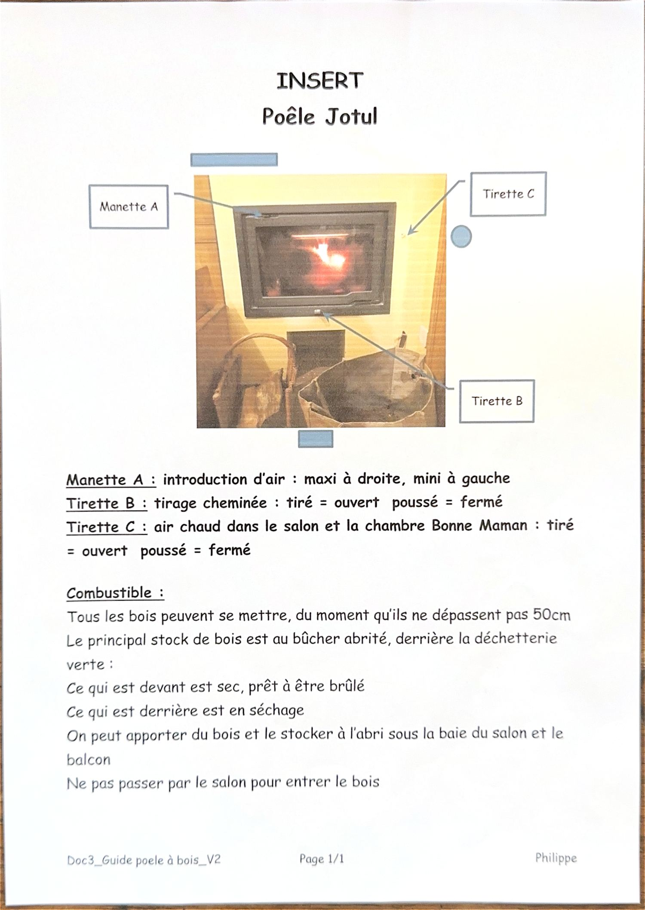

Les trois commandes : une manette d'air (A) et deux tirettes (B et C). Retenez que tiré = ouvert et poussé = fermé.
Commandes Les repères de l'insert
- Manette A
- Introduction d'air : maxi à droite, mini à gauche.
- Tirette B
- Tirage de la cheminée : tiré = ouvert, poussé = fermé.
- Tirette C
- Envoi d'air chaud dans le salon et la chambre Bonne Maman : tiré = ouvert, poussé = fermé.

Bois Où trouver le bois
- 📏 Tous les bois conviennent, à condition de ne pas dépasser 50 cm.
- 🪵 Le stock principal est au bûcher abrité, derrière la déchetterie verte.
- ✅ Devant : bois sec, prêt à être brûlé.
- ⏳ Derrière : bois encore en séchage.
- 🏠 On peut en stocker à l'abri sous la baie du salon et sur le balcon.
- 🚫 Ne pas faire passer le bois par le salon.
Allumage Allumer le feu
- Ouvrez les entrées d'air au maximum.
- Placez deux bûches de taille moyenne, une de chaque côté de la plaque de source.
- Froissez du papier journal (jamais de papier glacé) et disposez-le entre les deux bûches ; l'écorce de bouleau fonctionne très bien aussi.
- Entrecroisez du bois d'allumage par-dessus le papier, puis posez une bûche moyenne et mettez le feu.
- Laissez la porte entrouverte jusqu'à ce que les bûches s'enflamment, puis fermez l'entrée d'air inférieure une fois le feu pris.
- Réglez ensuite l'intensité avec l'entrée d'air supérieure.
Attention : la poignée peut être brûlante, utilisez des gants.
Recharge Remettre du bois
- Attendez qu'il ne reste plus que des braises.
- Avant d'ouvrir la porte, ouvrez complètement l'entrée d'air supérieure : cela équilibre les pressions et évite le refoulement de fumée.
- Ajoutez les bûches, en gardant l'entrée d'air supérieure au maximum quelques minutes, ou la porte entrouverte jusqu'à ce que le bois s'embrase.
- Refermez l'entrée d'air une fois le bois bien pris.
Jamais Ce qu'on ne brûle pas
Le foyer n'est pas un incinérateur. Ces matériaux l'endommagent et polluent.
- 🚫 Déchets ménagers, sacs plastiques
- 🚫 Bois peint ou imprégné (hautement toxique)
- 🚫 Aggloméré, contreplaqué
- 🚫 Bois échoué (bois de grève)
- 🚫 Essence, alcool ou tout liquide inflammable pour allumer
Le bon bois est sec (environ 20 % d'humidité) : bouleau, hêtre ou chêne. Un bois humide encrasse la vitre et le conduit, chauffe moins et augmente le risque de feu de cheminée.
Entretien Vitre, cendres et suie
- 🪟 Vitre : humidifiez un essuie-tout, imprégnez-le de cendres froides, frottez puis rincez à l'eau claire et essuyez.
- 🧹 Cendres : ne les retirez que foyer froid, et laissez toujours une couche au fond pour le protéger.
- 🧽 Suie : un nettoyage annuel de l'intérieur du foyer est nécessaire, à faire lors du ramonage du conduit.
- 🍂 Changement de saison : utilisez des bûches plus petites avec les entrées d'air plus ouvertes, et retirez les cendres plus souvent.
Urgence En cas de feu de cheminée
- Fermez l'ensemble des trappes et des entrées d'air.
- Maintenez la porte de la chambre de combustion fermée.
- Vérifiez la présence de fumée dans le grenier et dans la cave.
- Contactez le service de sécurité incendie.
- Après l'incident, faites contrôler le foyer et la cheminée par un spécialiste avant toute nouvelle utilisation.
Signe de surchauffe : certaines parties du foyer rougeoient.
Réduisez immédiatement l'ouverture des entrées d'air.